08 荧光与先进光路：从"看见"到"只看见想看的"
一句话：荧光把"标记"变成信号，把"激发"和"发射"在波长上分开；共聚焦、双光子、光片、TIRF 都是在同一个目标上做文章——只让焦点的光进入探测器。
8.1 荧光光路：一进一出
`` 激发滤光片 → 二向色镜（45°） → 物镜 → 样品 ↓ 发射 相机 ← 发射滤光片 ← 穿过二向色镜 ← 同一物镜收集 ``
- 斯托克斯位移：发射波长总比激发长（能量低），差额以热耗散——这是能把两者分开的物理基础；
- 二向色镜是长波通：短于截止全反射（去激发），长于截止全透射（放发射）；
- 发射滤光片再把残余激发散射挡死 → 黑背景、高对比。
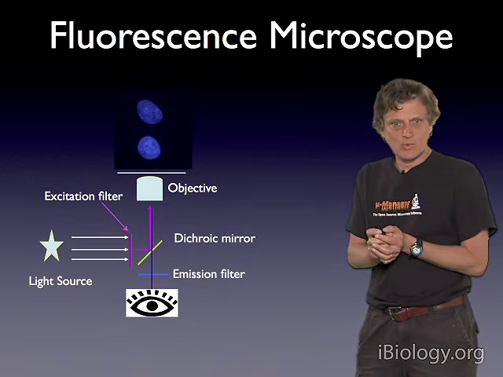
8.2 滤光片：干涉而非吸收
干涉滤光片靠多层介质膜的相长/相消选波长，比吸收型窄而准。标法 HQ470/40 = 中心 470 nm、带宽 40 nm。
三个滤光片按固定顺序装进一个立方体（filter cube），斜 45° 的那片就是二向色镜——整套东西决定了这台显微镜能看哪些染料。
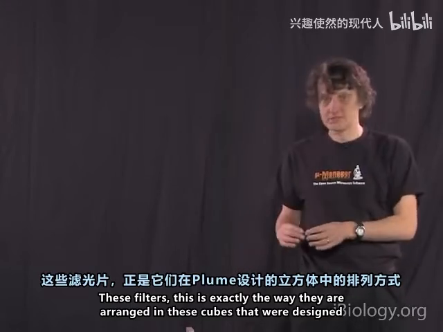
带宽必须盖住发射谱：用错带宽会丢掉 75% 的光。
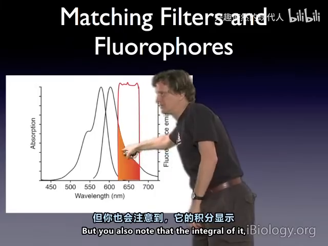
8.3 共聚焦：一个针孔解决所有离焦光
宽场把焦平面上下的光一起收进来，离焦光摊成大而暗的盘叠在清晰像上。
共聚焦 = 点照明 + 点探测：针孔放在与焦点严格共轭的位置，只有聚焦光能穿过；离焦光在针孔处摊成大斑，绝大部分被挡在探测器外。
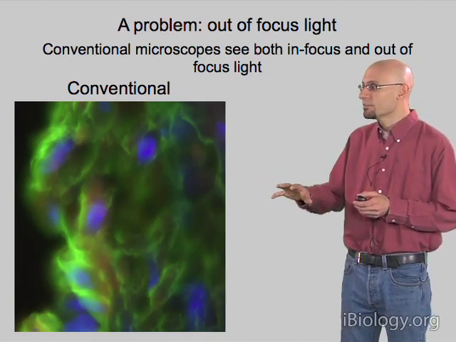
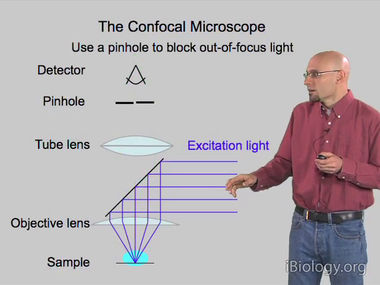
为什么针孔可以固定不动？ 扫描镜改变入射角 → 物镜把角度换成焦点的平移；发射光原路返回被"解扫描"回轴心。
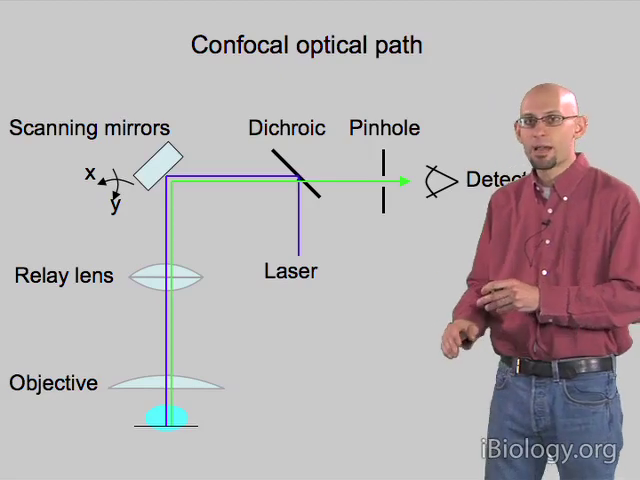
针孔常取 1 AU：再小只压窄光切片、信号骤降而横向不再改善。
8.4 双光子：不用针孔也能做光切
两个红外光子（各带一半能量）在 ~10⁻¹⁵ s 内被同一分子同时吸收，等效一个蓝光子。
荧光强度 ∝ I² → 只有焦点峰值处概率才够 → 激发被"光定位"在焦点，全程没有离焦激发，所以不需要针孔。
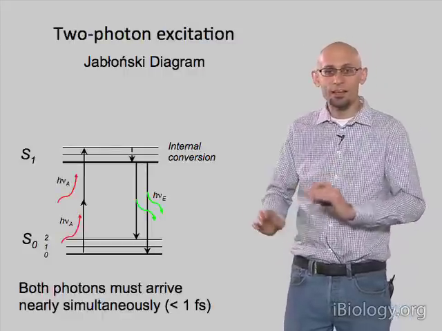
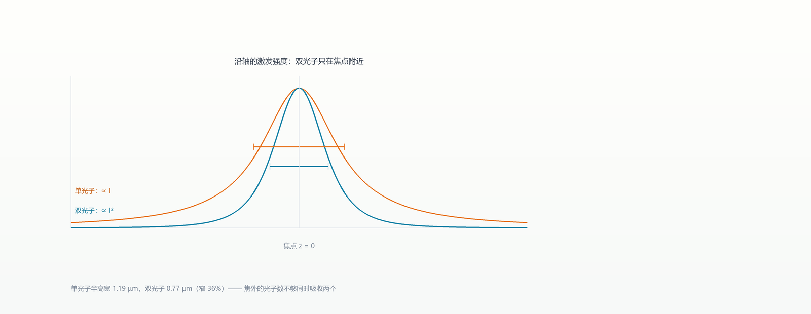
用长波的两个理由：组织在 ~1 µm 附近吸收小；瑞利散射 ∝ λ⁻⁴，波长翻倍散射降一个量级。代价是高峰值功率（80 fs / 80 MHz / 峰值 ~150 kW）。
8.5 光片：照明和探测正交
一个物镜只照、一个只看，90° 正交。有效体积 = 照明 PSF × 探测 PSF 的乘积。
片外不被激发 → 无漂白、无光毒；曝光比 ≈ 样品厚度/片厚，斑马鱼可差 200–300 倍。
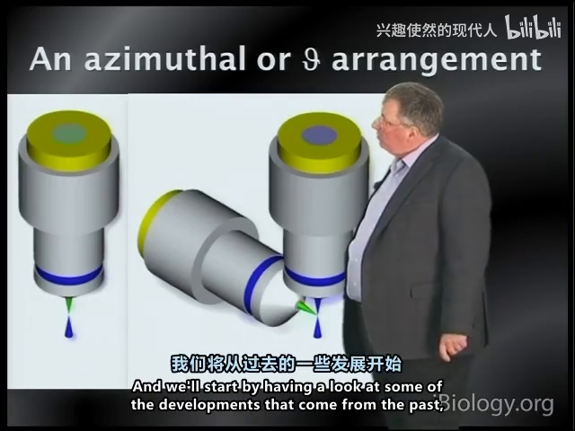
8.6 TIRF：只照界面 100 nm
光从玻璃射向水/细胞，入射角大于临界角 → 全内反射，水中只有一层倏逝场，强度随 z 指数衰减，深度约 λ/5–λ/10 ≈ 100 nm。
只有贴在界面的分子被激发，体相背景几乎为零。
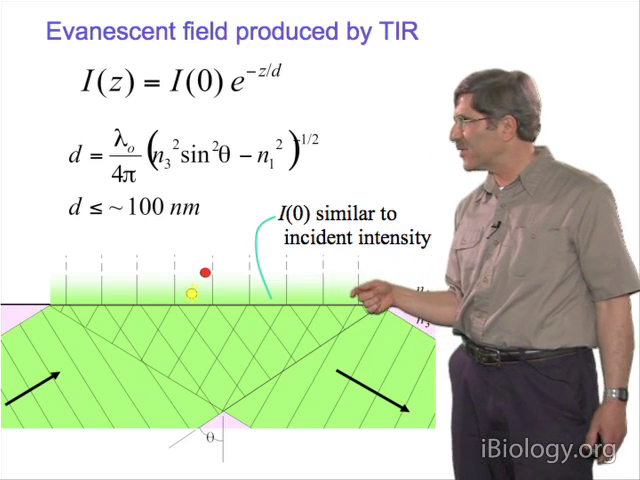
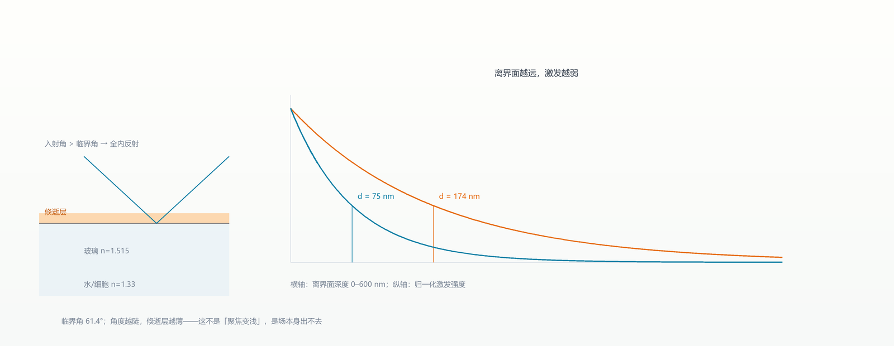
代价：折射率不均会把倏逝场转成散射光，z=0 处约 10% 已是非倏逝分量。
本章自测
- 二向色镜为什么必须放在激发光路里，而不是发射光路里？
- 共聚焦的 z 分辨率为什么比宽场好？靠的是什么元件？
- 双光子为什么不需要针孔？它的分辨率"限制"又在哪里？
回看：P30（33:35）、P34（24:47）、P35（31:15）、P36（33:27）、P37（42:24）。